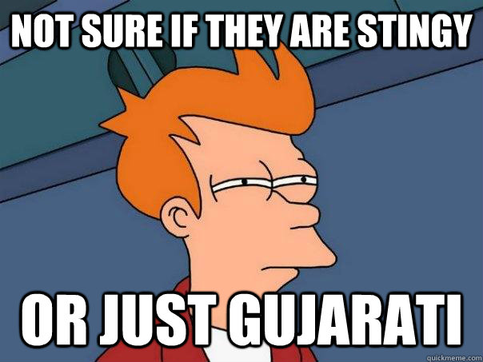

Gujarati’s Food and Travel Habits That We Love to Hate
Go to any corner of the world and you will find an enthusiastic Gujarati tourist merrily clicking away. While Gujaratis are known for their extensive travelling, they have a few food traits that can put their fellow travellers on edge.
 Khakhras and theplas
You would know you’re travelling with a Gujarati when packets of khakhra and thepla come out mid way. There have been instances when they’re stopped at security check points for carrying excess of pickles. But, we like how Gujaratis are always ready for the worst situations, even zombie apocalypse.
Khakhras and theplas
You would know you’re travelling with a Gujarati when packets of khakhra and thepla come out mid way. There have been instances when they’re stopped at security check points for carrying excess of pickles. But, we like how Gujaratis are always ready for the worst situations, even zombie apocalypse.
 The vegetarian conundrum
Gujaratis will try to find an Indian restaurant in the most bizarre places. If you are sitting in a French cafe enjoying your boeuf bourguignon, you are likely to spot a harried Gujarati looking for its vegetarian version.
The vegetarian conundrum
Gujaratis will try to find an Indian restaurant in the most bizarre places. If you are sitting in a French cafe enjoying your boeuf bourguignon, you are likely to spot a harried Gujarati looking for its vegetarian version.
 Yes please, I would like to have a Jain omlette
Sometimes the vegetarian in them gets carried away and order a vegetarian omelette. We have heard rumours of Jain chicken and Jain mutton.
Yes please, I would like to have a Jain omlette
Sometimes the vegetarian in them gets carried away and order a vegetarian omelette. We have heard rumours of Jain chicken and Jain mutton.
 Soup one by two
Two at the price of one? Only a Gujarati could’ve come up with this genius idea.
Soup one by two
Two at the price of one? Only a Gujarati could’ve come up with this genius idea.
 Irresistible sweet tooth
Occasionally they will insist on sweetening the pot of tea and adding a little sugar to their savoury dishes. So don't be surprised if you see an Italian chef scratching his head over a Gujarati's demands. An insider tells us,this is so that the brain remains sharp and the tongue sweet.
Irresistible sweet tooth
Occasionally they will insist on sweetening the pot of tea and adding a little sugar to their savoury dishes. So don't be surprised if you see an Italian chef scratching his head over a Gujarati's demands. An insider tells us,this is so that the brain remains sharp and the tongue sweet.
 Water, water everywhere
Some traditional Gujaratis have a tough time with table manners. You would think spilling water on the table is rude but some oldies will insist on washing their hands in their plate at the end of the meal.
Water, water everywhere
Some traditional Gujaratis have a tough time with table manners. You would think spilling water on the table is rude but some oldies will insist on washing their hands in their plate at the end of the meal.

Miser? Me? Pfff...No!
At times their penny pinching habits come handy. They will request for a juice without ice and then surreptitiously slip in a few ice cubes once they are halfway through it. You got to have Scrooge genes to understand the importance of this practice.